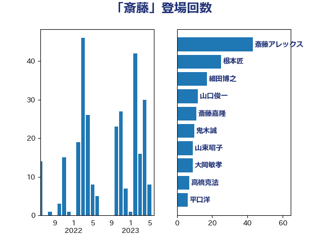

単語「斎藤」

| 太田房江 | 自由民主党 | 28 回 |
| 斎藤嘉隆 | 立憲民主党 | 19 回 |
| 斎藤アレックス | 国民民主党 | 13 回 |
| 細田博之 | 自由民主党 | 11 回 |
| 大岡敏孝 | 自由民主党 | 9 回 |
| 山東昭子 | 自由民主党 | 9 回 |
| 斎藤洋明 | 自由民主党 | 9 回 |
| 山本順三 | 自由民主党 | 7 回 |
| 野田国義 | 立憲民主党 | 5 回 |
| 関芳弘 | 自由民主党 | 5 回 |
| 古川俊治 | 自由民主党 | 4 回 |
| 大塚拓 | 自由民主党 | 4 回 |
| 山口俊一 | 自由民主党 | 3 回 |
| 梅村みずほ | 日本維新の会 | 3 回 |
| 萩生田光一 | 自由民主党 | 3 回 |
| 赤池誠章 | 自由民主党 | 3 回 |
| 鰐淵洋子 | 公明党 | 3 回 |
| 中谷真一 | 自由民主党 | 2 回 |
| 古川禎久 | 自由民主党 | 2 回 |
| 小林茂樹 | 自由民主党 | 2 回 |
| 小泉進次郎 | 自由民主党 | 2 回 |
| 岸真紀子 | 立憲民主党 | 2 回 |
| 池田佳隆 | 自由民主党 | 2 回 |
| 浜田靖一 | 自由民主党 | 2 回 |
| 漆間譲司 | 日本維新の会 | 2 回 |
| 田村貴昭 | 日本共産党 | 2 回 |
| 細田健一 | 自由民主党 | 2 回 |
| 舩後靖彦 | れいわ新選組 | 2 回 |
| 茂木敏充 | 自由民主党 | 2 回 |
| 赤羽一嘉 | 公明党 | 2 回 |
| 金子恭之 | 自由民主党 | 2 回 |
| 鈴木庸介 | 立憲民主党 | 2 回 |
| 鷲尾英一郎 | 自由民主党 | 2 回 |
| 齋藤健 | 自由民主党 | 2 回 |
| 三ッ林裕巳 | 自由民主党 | 1 回 |
| 上野通子 | 自由民主党 | 1 回 |
| 中山展宏 | 自由民主党 | 1 回 |
| 中川宏昌 | 公明党 | 1 回 |
| 中西健治 | 自由民主党 | 1 回 |
| 中西祐介 | 自由民主党 | 1 回 |
| 加藤鮎子 | 自由民主党 | 1 回 |
| 勝部賢志 | 立憲民主党 | 1 回 |
| 古川康 | 自由民主党 | 1 回 |
| 吉川ゆうみ | 自由民主党 | 1 回 |
| 吉田忠智 | 立憲民主党 | 1 回 |
| 安江伸夫 | 公明党 | 1 回 |
| 宮沢洋一 | 自由民主党 | 1 回 |
| 宮路拓馬 | 自由民主党 | 1 回 |
| 小熊慎司 | 立憲民主党 | 1 回 |
| 山口壯 | 自由民主党 | 1 回 |
| 山田賢司 | 自由民主党 | 1 回 |
| 新妻秀規 | 公明党 | 1 回 |
| 木村次郎 | 自由民主党 | 1 回 |
| 末松信介 | 自由民主党 | 1 回 |
| 林芳正 | 自由民主党 | 1 回 |
| 柳本顕 | 自由民主党 | 1 回 |
| 根本匠 | 自由民主党 | 1 回 |
| 横沢高徳 | 立憲民主党 | 1 回 |
| 泉田裕彦 | 自由民主党 | 1 回 |
| 海江田万里 | 立憲民主党 | 1 回 |
| 渡辺博道 | 自由民主党 | 1 回 |
| 渡辺周 | 立憲民主党 | 1 回 |
| 渡辺孝一 | 自由民主党 | 1 回 |
| 渡辺猛之 | 自由民主党 | 1 回 |
| 玉木雄一郎 | 国民民主党 | 1 回 |
| 矢倉克夫 | 公明党 | 1 回 |
| 石田真敏 | 自由民主党 | 1 回 |
| 福山哲郎 | 立憲民主党 | 1 回 |
| 稲津久 | 公明党 | 1 回 |
| 薗浦健太郎 | 自由民主党 | 1 回 |
| 西村康稔 | 自由民主党 | 1 回 |
| 谷公一 | 自由民主党 | 1 回 |
| 谷田川元 | 立憲民主党 | 1 回 |
| 足立敏之 | 自由民主党 | 1 回 |
| 野村哲郎 | 自由民主党 | 1 回 |
| 鈴木敦 | 国民民主党 | 1 回 |
| 高木毅 | 自由民主党 | 1 回 |
| 高鳥修一 | 自由民主党 | 1 回 |